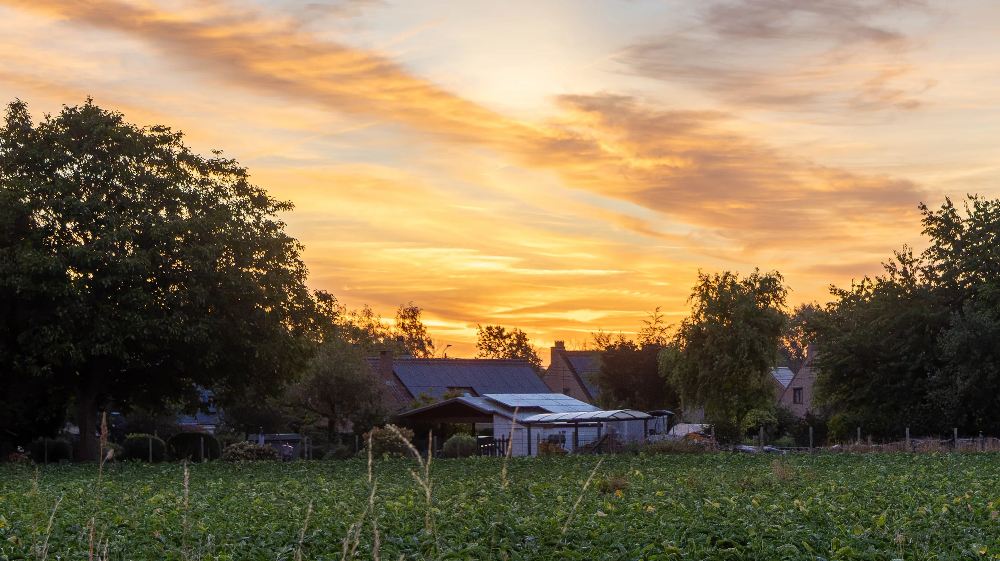

l'aube
Un matin comme les autres,
Un vide bien différent,
J'irai m'exiler à l'aube,
De cette vie vociférante.

le zénith
Ô grand soleil,
D’aussi haut dans le ciel,
Tu réveilles sans amoindrir,
Ce que j'ai vécu de pire
le crépuscule
Quand ta lumière s’apaise,
Disparaissant sous l’horizon,
Je sens s’ouvrir la plaie,
Je me sens moribond.
la nuit
Ô grand soleil,
Toi qui expose sans pitié,
Ce qui brule en mon être,
Te cacherais tu peut-être,
Dans mon interiorité.
Un matin comme les autres,
Un vide bien différent,
J'irai m'exiler à l'aube,
De cette vie vociférante.